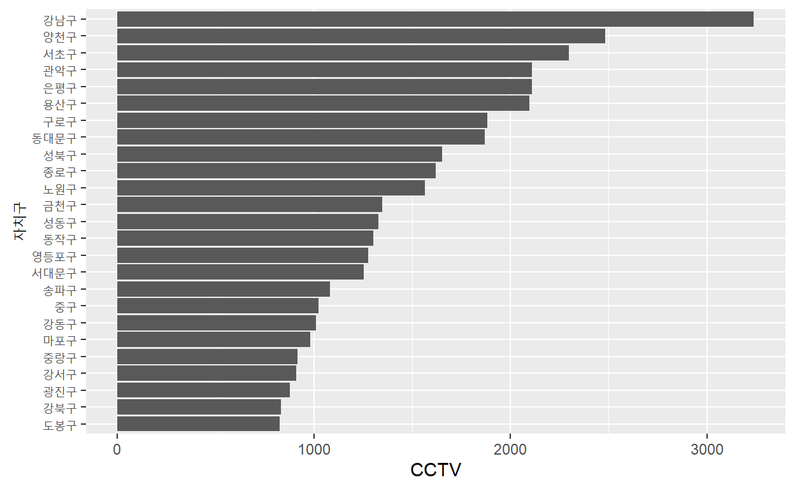
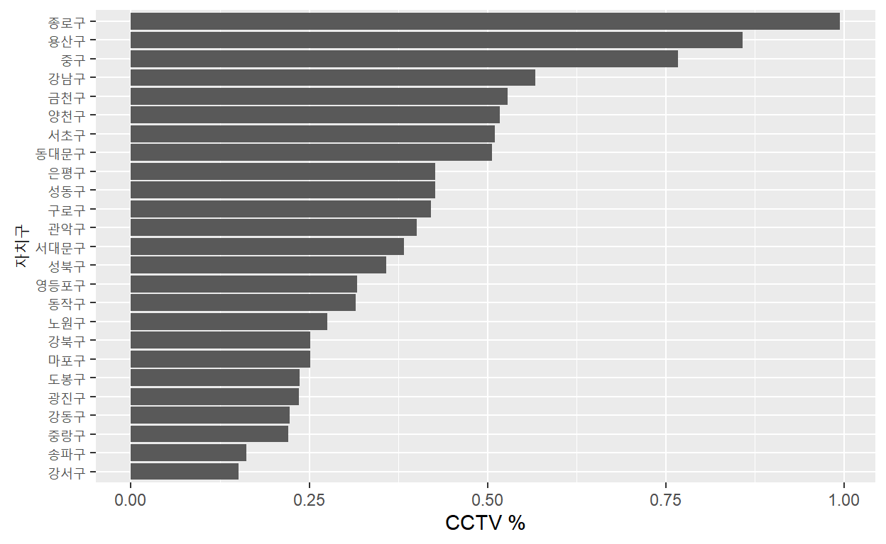
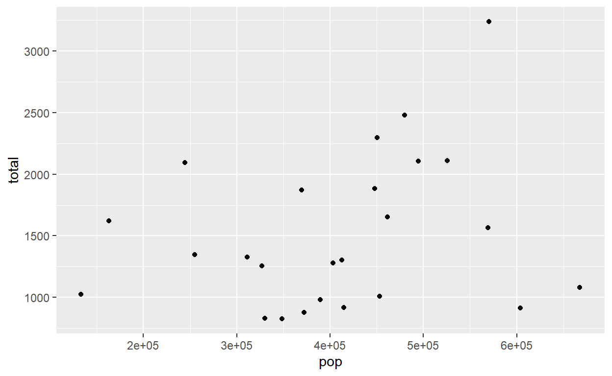
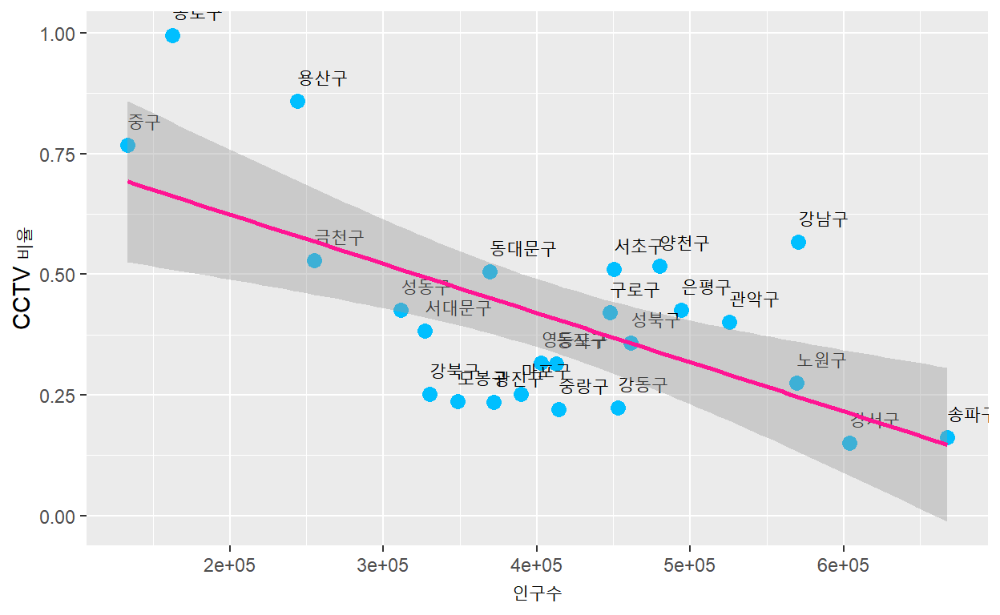

패키지 준비
library(tidyverse)
library(readxl)서울시 CCTV 데이터(csv 파일) 불러오기
서울시 각 자치구별 CCTV 설치현황이 들어 있는 데이터 파일을 불러옵니다. data file: cctv_seoul.csv
cctv_seoul <- read_csv("cctv_seoul.csv")
cctv_seoul
# A tibble: 25 x 6
기관명 소계 `2013년도 이전` `2014년` `2015년` `2016년`
<chr> <dbl> <dbl> <dbl> <dbl> <dbl>
1 강남구 3238 1292 430 584 932
2 강동구 1010 379 99 155 377
3 강북구 831 369 120 138 204
4 강서구 911 388 258 184 81
5 관악구 2109 846 260 390 613
6 광진구 878 573 78 53 174
7 구로구 1884 1142 173 246 323
8 금천구 1348 674 51 269 354
9 노원구 1566 542 57 451 516
10 도봉구 825 238 159 42 386
# ... with 15 more rows데이터의 열 이름(변수명)은 영문으로 되어 있는 것이 더 편리하기 때문에 rename 함수를 이용하여 변수명을 변경합니다.
# 열(column)이름(변수명) 변경하기, new name = old name
cctv_seoul %>%
rename("gu" = "기관명",
"total" = "소계",
"before2013" = "2013년도 이전",
"y2014" = "2014년",
"y2015" = "2015년",
"y2016" = "2016년") -> cctv_seoul
cctv_seoul
# A tibble: 25 x 6
gu total before2013 y2014 y2015 y2016
<chr> <dbl> <dbl> <dbl> <dbl> <dbl>
1 강남구 3238 1292 430 584 932
2 강동구 1010 379 99 155 377
3 강북구 831 369 120 138 204
4 강서구 911 388 258 184 81
5 관악구 2109 846 260 390 613
6 광진구 878 573 78 53 174
7 구로구 1884 1142 173 246 323
8 금천구 1348 674 51 269 354
9 노원구 1566 542 57 451 516
10 도봉구 825 238 159 42 386
# ... with 15 more rows서울시 CCTV 데이터의 특성을 간단하게 파악합니다.
summary(cctv_seoul)
gu total before2013 y2014
Length:25 Min. : 825 Min. : 238.0 Min. : 21.0
Class :character 1st Qu.:1010 1st Qu.: 464.0 1st Qu.: 78.0
Mode :character Median :1327 Median : 573.0 Median :142.0
Mean :1515 Mean : 764.8 Mean :159.5
3rd Qu.:1884 3rd Qu.:1070.0 3rd Qu.:218.0
Max. :3238 Max. :1843.0 Max. :430.0
y2015 y2016
Min. : 30.0 Min. : 81.0
1st Qu.:103.0 1st Qu.:292.0
Median :184.0 Median :377.0
Mean :205.2 Mean :385.9
3rd Qu.:269.0 3rd Qu.:467.0
Max. :584.0 Max. :932.0 자치구별 CCTV 설치 현황 비교
CCTV 설치 대수가 가장 적은 자치구는?
cctv_seoul %>%
arrange(total) # 오름차순 정렬
# A tibble: 25 x 6
gu total before2013 y2014 y2015 y2016
<chr> <dbl> <dbl> <dbl> <dbl> <dbl>
1 도봉구 825 238 159 42 386
2 강북구 831 369 120 138 204
3 광진구 878 573 78 53 174
4 강서구 911 388 258 184 81
5 중랑구 916 509 121 177 109
6 마포구 980 314 118 169 379
7 강동구 1010 379 99 155 377
8 중구 1023 413 190 72 348
9 송파구 1081 529 21 68 463
10 서대문구 1254 844 50 68 292
# ... with 15 more rowsCCTV 설치 대수가 가장 작은 5개 구는 도봉구, 강북구, 광진구, 강서구, 중랑구입니다.
CCTV 설치 대수가 가장 많은 자치구는?
cctv_seoul %>%
arrange(desc(total)) # 내림차순 정렬
# A tibble: 25 x 6
gu total before2013 y2014 y2015 y2016
<chr> <dbl> <dbl> <dbl> <dbl> <dbl>
1 강남구 3238 1292 430 584 932
2 양천구 2482 1843 142 30 467
3 서초구 2297 1406 157 336 398
4 관악구 2109 846 260 390 613
5 은평구 2108 1138 224 278 468
6 용산구 2096 1368 218 112 398
7 구로구 1884 1142 173 246 323
8 동대문구 1870 1070 23 198 579
9 성북구 1651 1009 78 360 204
10 종로구 1619 464 314 211 630
# ... with 15 more rows
# 서울시 CCTV 현황 그래프로 분석하기
cctv_seoul %>%
ggplot(aes(x = reorder(gu, total), y = total)) +
geom_bar(stat = "identity") +
coord_flip() +
xlab("자치구") +
ylab("CCTV")
CCTV 설치 대수가 가장 많은 5개 구는 강남구, 양천구, 서초구, 관악구, 은평구입니다.
최근 3년간 CCTV 증가율
최근 3년간 CCTV 증가율 변수를 추가하고자 합니다. 2014년~2016년을 합한 후 2013년도 이전으로 나누어 CCTV 증가율을 산출하겠습니다. 산출된 CCTV 증가율을 기준으로 정렬하여 CCTV 증가율이 가장 높은 자치구는 어디인지 살펴보겠습니다.
cctv_seoul %>%
mutate(growth_rate = (y2014 + y2015 + y2016) / before2013 * 100) -> cctv_seoul
cctv_seoul %>%
arrange(desc(growth_rate))
# A tibble: 25 x 7
gu total before2013 y2014 y2015 y2016 growth_rate
<chr> <dbl> <dbl> <dbl> <dbl> <dbl> <dbl>
1 종로구 1619 464 314 211 630 249.
2 도봉구 825 238 159 42 386 247.
3 마포구 980 314 118 169 379 212.
4 노원구 1566 542 57 451 516 189.
5 강동구 1010 379 99 155 377 166.
6 영등포구 1277 495 214 195 373 158.
7 강남구 3238 1292 430 584 932 151.
8 관악구 2109 846 260 390 613 149.
9 중구 1023 413 190 72 348 148.
10 동작구 1302 544 341 103 314 139.
# ... with 15 more rows분석결과, 최근 3년간 CCTV 증가율이 가장 높은 5개 구는 종로구, 도봉구, 마포구, 노원구, 강동구입니다.
서울시 인구 데이터(excel 파일) 불러오기
서울시 각 자치구별 인구정보가 들어 있는 데이터 파일을 불러옵니다. data file: pop_seoul.xlsx
pop_seoul <- read_excel("pop_seoul.xlsx")
pop_seoul
# A tibble: 26 x 5
구별 인구수 한국인 외국인 고령자
<chr> <dbl> <dbl> <dbl> <dbl>
1 합계 10197604 9926968 270636 1321458
2 종로구 162820 153589 9231 25425
3 중구 133240 124312 8928 20764
4 용산구 244203 229456 14747 36231
5 성동구 311244 303380 7864 39997
6 광진구 372164 357211 14953 42214
7 동대문구 369496 354079 15417 54173
8 중랑구 414503 409882 4621 56774
9 성북구 461260 449773 11487 64692
10 강북구 330192 326686 3506 54813
# ... with 16 more rows데이터의 열 이름(변수명)을 변경합니다.
# 변수명 변경하기
pop_seoul %>%
rename("gu" = "구별",
"pop" = "인구수",
"korean" = "한국인",
"foreign" = "외국인",
"aged" = "고령자") -> pop_seoul
pop_seoul
# A tibble: 26 x 5
gu pop korean foreign aged
<chr> <dbl> <dbl> <dbl> <dbl>
1 합계 10197604 9926968 270636 1321458
2 종로구 162820 153589 9231 25425
3 중구 133240 124312 8928 20764
4 용산구 244203 229456 14747 36231
5 성동구 311244 303380 7864 39997
6 광진구 372164 357211 14953 42214
7 동대문구 369496 354079 15417 54173
8 중랑구 414503 409882 4621 56774
9 성북구 461260 449773 11487 64692
10 강북구 330192 326686 3506 54813
# ... with 16 more rows합계 데이터는 불필요하기 때문에 합계가 입력되어 있는 첫번째 행을 삭제합니다.
# 첫번째 행(합계) 삭제하기
pop_seoul <- pop_seoul[-1,]
pop_seoul
# A tibble: 25 x 5
gu pop korean foreign aged
<chr> <dbl> <dbl> <dbl> <dbl>
1 종로구 162820 153589 9231 25425
2 중구 133240 124312 8928 20764
3 용산구 244203 229456 14747 36231
4 성동구 311244 303380 7864 39997
5 광진구 372164 357211 14953 42214
6 동대문구 369496 354079 15417 54173
7 중랑구 414503 409882 4621 56774
8 성북구 461260 449773 11487 64692
9 강북구 330192 326686 3506 54813
10 도봉구 348646 346629 2017 51312
# ... with 15 more rows외국인 비율(foreign_percent)과 고령자 비율(aged_percent)을 계산하여 새로운 변수로 만듭니다.
# 외국인 비율과 고령자 비율 변수 생성
pop_seoul %>%
mutate(foreign_percent = foreign / pop * 100,
aged_percent = aged /pop * 100) -> pop_seoul
pop_seoul
# A tibble: 25 x 7
gu pop korean foreign aged foreign_percent aged_percent
<chr> <dbl> <dbl> <dbl> <dbl> <dbl> <dbl>
1 종로구 162820 153589 9231 25425 5.67 15.6
2 중구 133240 124312 8928 20764 6.70 15.6
3 용산구 244203 229456 14747 36231 6.04 14.8
4 성동구 311244 303380 7864 39997 2.53 12.9
5 광진구 372164 357211 14953 42214 4.02 11.3
6 동대문구 369496 354079 15417 54173 4.17 14.7
7 중랑구 414503 409882 4621 56774 1.11 13.7
8 성북구 461260 449773 11487 64692 2.49 14.0
9 강북구 330192 326686 3506 54813 1.06 16.6
10 도봉구 348646 346629 2017 51312 0.579 14.7
# ... with 15 more rows서울시 자치구별 인구현황 비교
인구가 가장 많은 자치구는?
# 인구수 기준으로 정렬
pop_seoul %>%
arrange(desc(pop))
# A tibble: 25 x 7
gu pop korean foreign aged foreign_percent aged_percent
<chr> <dbl> <dbl> <dbl> <dbl> <dbl> <dbl>
1 송파구 667483 660584 6899 72506 1.03 10.9
2 강서구 603772 597248 6524 72548 1.08 12.0
3 강남구 570500 565550 4950 63167 0.868 11.1
4 노원구 569384 565565 3819 71941 0.671 12.6
5 관악구 525515 507203 18312 68082 3.48 13.0
6 은평구 494388 489943 4445 72334 0.899 14.6
7 양천구 479978 475949 4029 52975 0.839 11.0
8 성북구 461260 449773 11487 64692 2.49 14.0
9 강동구 453233 449019 4214 54622 0.930 12.1
10 서초구 450310 445994 4316 51733 0.958 11.5
# ... with 15 more rows인구 수 기준으로 정렬한 결과 송파구, 강서구, 강남구, 노원구, 관악구 순으로 인구가 많은 것으로 나타납니다.
외국인이 많거나 외국인 비율이 높은 구는 어디인가?
# 외국인 기준으로 정렬
pop_seoul %>%
arrange(desc(foreign))
# A tibble: 25 x 7
gu pop korean foreign aged foreign_percent aged_percent
<chr> <dbl> <dbl> <dbl> <dbl> <dbl> <dbl>
1 영등포구 402985 368072 34913 52413 8.66 13.0
2 구로구 447874 416487 31387 56833 7.01 12.7
3 금천구 255082 236353 18729 32970 7.34 12.9
4 관악구 525515 507203 18312 68082 3.48 13.0
5 동대문구 369496 354079 15417 54173 4.17 14.7
6 광진구 372164 357211 14953 42214 4.02 11.3
7 용산구 244203 229456 14747 36231 6.04 14.8
8 서대문구 327163 314982 12181 48161 3.72 14.7
9 동작구 412520 400456 12064 56013 2.92 13.6
10 성북구 461260 449773 11487 64692 2.49 14.0
# ... with 15 more rows
# 외국인 비율 기준으로 정렬
pop_seoul %>%
arrange(desc(foreign_percent))
# A tibble: 25 x 7
gu pop korean foreign aged foreign_percent aged_percent
<chr> <dbl> <dbl> <dbl> <dbl> <dbl> <dbl>
1 영등포구 402985 368072 34913 52413 8.66 13.0
2 금천구 255082 236353 18729 32970 7.34 12.9
3 구로구 447874 416487 31387 56833 7.01 12.7
4 중구 133240 124312 8928 20764 6.70 15.6
5 용산구 244203 229456 14747 36231 6.04 14.8
6 종로구 162820 153589 9231 25425 5.67 15.6
7 동대문구 369496 354079 15417 54173 4.17 14.7
8 광진구 372164 357211 14953 42214 4.02 11.3
9 서대문구 327163 314982 12181 48161 3.72 14.7
10 관악구 525515 507203 18312 68082 3.48 13.0
# ... with 15 more rows외국인이 많은 구는 영등포구, 구로구, 금천구 등이며 외국인 비율이 높은 구는 영등포구, 금천구, 구로구 순입니다.
고령자가 많거나 고령자 비율이 높은 구는 어디인가?
# 고령자 기준으로 정렬
pop_seoul %>%
arrange(desc(aged))
# A tibble: 25 x 7
gu pop korean foreign aged foreign_percent aged_percent
<chr> <dbl> <dbl> <dbl> <dbl> <dbl> <dbl>
1 강서구 603772 597248 6524 72548 1.08 12.0
2 송파구 667483 660584 6899 72506 1.03 10.9
3 은평구 494388 489943 4445 72334 0.899 14.6
4 노원구 569384 565565 3819 71941 0.671 12.6
5 관악구 525515 507203 18312 68082 3.48 13.0
6 성북구 461260 449773 11487 64692 2.49 14.0
7 강남구 570500 565550 4950 63167 0.868 11.1
8 구로구 447874 416487 31387 56833 7.01 12.7
9 중랑구 414503 409882 4621 56774 1.11 13.7
10 동작구 412520 400456 12064 56013 2.92 13.6
# ... with 15 more rows
# 고령자 비율 기준으로 정렬
pop_seoul %>%
arrange(desc(aged_percent))
# A tibble: 25 x 7
gu pop korean foreign aged foreign_percent aged_percent
<chr> <dbl> <dbl> <dbl> <dbl> <dbl> <dbl>
1 강북구 330192 326686 3506 54813 1.06 16.6
2 종로구 162820 153589 9231 25425 5.67 15.6
3 중구 133240 124312 8928 20764 6.70 15.6
4 용산구 244203 229456 14747 36231 6.04 14.8
5 서대문구 327163 314982 12181 48161 3.72 14.7
6 도봉구 348646 346629 2017 51312 0.579 14.7
7 동대문구 369496 354079 15417 54173 4.17 14.7
8 은평구 494388 489943 4445 72334 0.899 14.6
9 성북구 461260 449773 11487 64692 2.49 14.0
10 중랑구 414503 409882 4621 56774 1.11 13.7
# ... with 15 more rows고령자가 많은 구는 강서구, 송파구, 은평구 순이며 고령자 비율이 높은 구는 강북구, 종로구, 중구 순입니다.
CCTV 데이터와 인구 데이터 합치기
# 두 데이터 공통 변수인 구별(gu) 변수를 기준으로 병합(merge)
cctv_seoul %>% inner_join(pop_seoul, by = "gu") -> cctv_pop_seoul
cctv_pop_seoul
# A tibble: 25 x 13
gu total before2013 y2014 y2015 y2016 growth_rate pop korean
<chr> <dbl> <dbl> <dbl> <dbl> <dbl> <dbl> <dbl> <dbl>
1 강남구~ 3238 1292 430 584 932 151. 570500 565550
2 강동구~ 1010 379 99 155 377 166. 453233 449019
3 강북구~ 831 369 120 138 204 125. 330192 326686
4 강서구~ 911 388 258 184 81 135. 603772 597248
5 관악구~ 2109 846 260 390 613 149. 525515 507203
6 광진구~ 878 573 78 53 174 53.2 372164 357211
7 구로구~ 1884 1142 173 246 323 65.0 447874 416487
8 금천구~ 1348 674 51 269 354 100 255082 236353
9 노원구~ 1566 542 57 451 516 189. 569384 565565
10 도봉구~ 825 238 159 42 386 247. 348646 346629
# ... with 15 more rows, and 4 more variables: foreign <dbl>,
# aged <dbl>, foreign_percent <dbl>, aged_percent <dbl>필요없는 4개 변수(before2013, y2014, y2015, y2016)를 제거합니다.
# 필요없는 열(변수) 제거하기
# 제거할 변수 : before2013, y2014, y2015, y2016
cctv_pop_seoul %>%
select(-c(before2013, y2014, y2015, y2016)) -> cctv_pop_seoul
cctv_pop_seoul
# A tibble: 25 x 9
gu total growth_rate pop korean foreign aged foreign_percent
<chr> <dbl> <dbl> <dbl> <dbl> <dbl> <dbl> <dbl>
1 강남구~ 3238 151. 570500 565550 4950 63167 0.868
2 강동구~ 1010 166. 453233 449019 4214 54622 0.930
3 강북구~ 831 125. 330192 326686 3506 54813 1.06
4 강서구~ 911 135. 603772 597248 6524 72548 1.08
5 관악구~ 2109 149. 525515 507203 18312 68082 3.48
6 광진구~ 878 53.2 372164 357211 14953 42214 4.02
7 구로구~ 1884 65.0 447874 416487 31387 56833 7.01
8 금천구~ 1348 100 255082 236353 18729 32970 7.34
9 노원구~ 1566 189. 569384 565565 3819 71941 0.671
10 도봉구~ 825 247. 348646 346629 2017 51312 0.579
# ... with 15 more rows, and 1 more variable: aged_percent <dbl>CCTV 대수를 인구로 나눈 CCTV 비율 변수(cctv_percent)를 추가로 만듭니다.
# CCTV 비율 변수 만들기
cctv_pop_seoul %>%
mutate(cctv_percent = total / pop * 100) -> cctv_pop_seoul새로 만든 CCTV 비율을 기준으로 정렬하여 그래프를 만들면 다음과 같습니다. CCTV 비율 기준으로 보면 종로구, 용산구, 중구가 높게 나옵니다.
cctv_pop_seoul %>%
ggplot(aes(x = reorder(gu, cctv_percent), y = cctv_percent)) +
geom_bar(stat = "identity") +
coord_flip() +
xlab("자치구") +
ylab("CCTV %")
서울시 인구와 CCTV 설치대수 관계 분석
인구와 CCTV 개수의 관계
# 인구와 CCTV 설치대수의 상관관계 분석
cor.test(cctv_pop_seoul$pop, cctv_pop_seoul$total)
Pearson's product-moment correlation
data: cctv_pop_seoul$pop and cctv_pop_seoul$total
t = 1.2026, df = 23, p-value = 0.2414
alternative hypothesis: true correlation is not equal to 0
95 percent confidence interval:
-0.1680625 0.5823817
sample estimates:
cor
0.2432198 p-값이 0.05보다 크므로 95% 신뢰수준에서 인구와 CCTV 개수의 상관관계는 없다고 판단할 수 있습니다. 상관계수는 0.24로 상관관계가 있다고 하더라도 매우 낮은 수준입니다.
# 인구와 CCTV 설치대수의 산점도
cctv_pop_seoul %>%
ggplot(aes(pop, total)) +
geom_point()
고령자 비율과 CCTV 개수의 상관관계
cor.test(cctv_pop_seoul$aged_percent, cctv_pop_seoul$total)
Pearson's product-moment correlation
data: cctv_pop_seoul$aged_percent and cctv_pop_seoul$total
t = -1.2842, df = 23, p-value = 0.2119
alternative hypothesis: true correlation is not equal to 0
95 percent confidence interval:
-0.5931685 0.1520038
sample estimates:
cor
-0.2586627 p-값이 0.05보다 크므로 95% 신뢰수준에서 고령자 비율과 CCTV 개수의 상관관계는 없다고 판단할 수 있습니다.
외국인 비율과 CCTV 개수의 상관관계
cor.test(cctv_pop_seoul$foreign_percent, cctv_pop_seoul$total)
Pearson's product-moment correlation
data: cctv_pop_seoul$foreign_percent and cctv_pop_seoul$total
t = -0.25117, df = 23, p-value = 0.8039
alternative hypothesis: true correlation is not equal to 0
95 percent confidence interval:
-0.4383731 0.3500637
sample estimates:
cor
-0.05230165 p-값이 0.05보다 크므로 95% 신뢰수준에서 외국인 비율과 CCTV 개수의 상관관계는 없다고 판단할 수 있습니다.
인구와 CCTV 개수의 관계 - 산점도와 회귀선
cctv_pop_seoul %>%
ggplot(aes(pop, total)) +
geom_point(color = "deepskyblue", size = 3) +
geom_text(aes(label = gu, vjust = -1, hjust = 0)) +
geom_smooth(method = lm, color = "deeppink") +
labs(x = "인구수", y = "CCTV")
자치구의 인구와 CCTV 개수의 일반적인 경향을 추정하기 위해 회귀선(핑크색 직선)을 그렸습니다. 회귀선 보다 위에 있는 자치구는 상대적으로 CCTV가 많이 설치된 자치구이고, 반대로 아래에 있는 자치구는 상대적으로 CCTV가 적에 설치된 자치구입니다. 강남구, 양천구, 서초구 등은 일반적인 경향보다 더 많이 설치된 자치구입니다. 강북구, 도봉구, 강서구 등은 일반적인 경향보다 더 적에 설치된 자치구라 할 수 있습니다.
인구와 CCTV 비율의 관계 - 산점도와 회귀선
cctv_pop_seoul %>%
ggplot(aes(pop, cctv_percent)) +
geom_point(color = "deepskyblue", size = 3) +
geom_text(aes(label = gu, vjust = -1, hjust = 0)) +
geom_smooth(method = lm, color = "deeppink") +
labs(x = "인구수", y = "CCTV 비율")
참고로 자치구 인구와 CCTV 비율의 산점도와 회귀선을 그려 살펴본 결과 종로구, 용산구, 강남구 등이 일반적인 경향보다 더 높은 것으로 나타납니다.
참고 : 민형기(2017)의 ’파이썬으로 데이터 주무르기’를 참고하여 R 언어로 분석